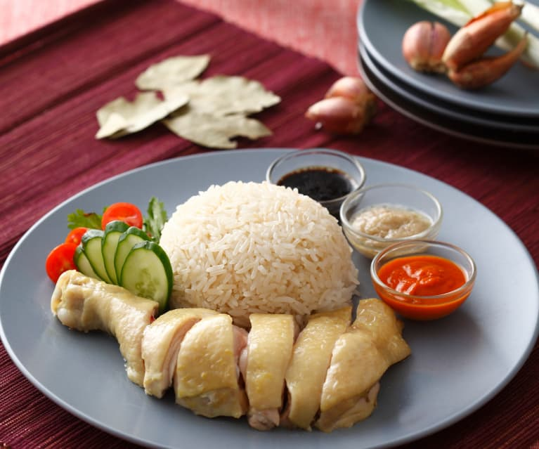
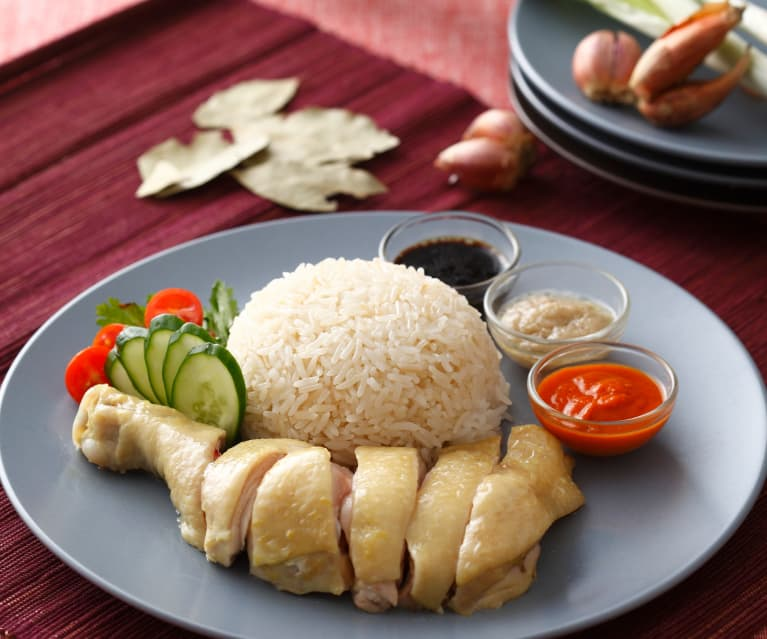

海南雞飯
海南雞飯起源於中國海南島的文昌市，海南人會以文昌當地的白切雞做法，同時配以雞油和浸雞水烹煮的米飯，雞飯嫩滑多汁、油潤香醇，所以在海南島俗稱為文昌雞飯。 後來移民到東南亞一帶的海南人將其發揚光大，變成風靡南洋的美食，在新加坡及其他東南亞國家成為國菜。
海南雞飯起源於中國海南島的文昌市，海南人會以文昌當地的白切雞做法，同時配以雞油和浸雞水烹煮的米飯，雞飯嫩滑多汁、油潤香醇，所以在海南島俗稱為文昌雞飯。 後來移民到東南亞一帶的海南人將其發揚光大，變成風靡南洋的美食，在新加坡及其他東南亞國家成為國菜。
